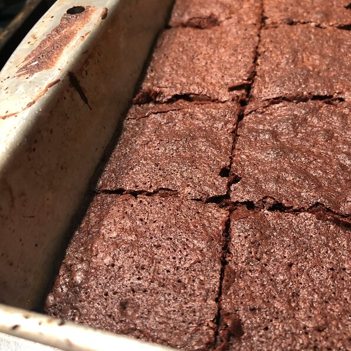

Brownies

Description
Brownies are so good!
Enjoy these warm for the best brownies you've ever had!
This recipie includes a chocolate frosting for the brownies.
Ingredients
Brownies:
- 1/2 cup butter
- 1 cup white sugar
- 2 eggs
- 1 teaspoon vanilla extract
- 1/3 cup unsweetened cocoa powder
- 1/2 cup all-purpose flour
- 1/4 teaspoon salt
- 1/4 teaspoon baking powder
Frosting:
- 3 tablespoons butter, softened
- 3 tablespoons unsweetened cocoa powder
- 1 tablespoon honey
- 1 teaspoon vanilla extract
- 1 cup confectioners' sugar
Steps
- Preheat oven to 350 degrees F (175 degrees C)
- In a large saucepan melt 1/2 cup butter. Remove from heat,
and stir in sugar, eggs, and 1 teaspoon vanilla.
Beat in 1/3 cup cocoa, 1/2 cup flour, salt, and baking powder.
Spread batter into prepared pan.
- Bake in preheated oven for 25 to 30 minutes. Do not overcook.
- To make frosting:Combine 3 tablespoons softened butter,
3 tablespoons cocoa, honey, 1 teaspoon vanilla extract,
and 1 cup confectioners' sugar. Stir until smooth.
Frost brownies while they are still warm.